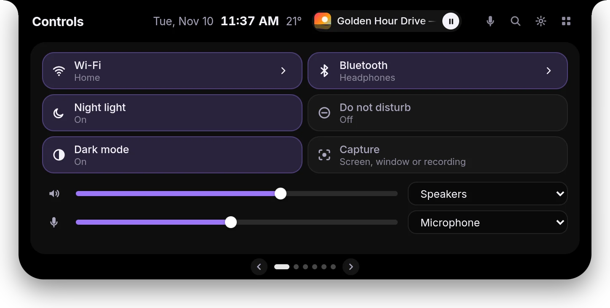
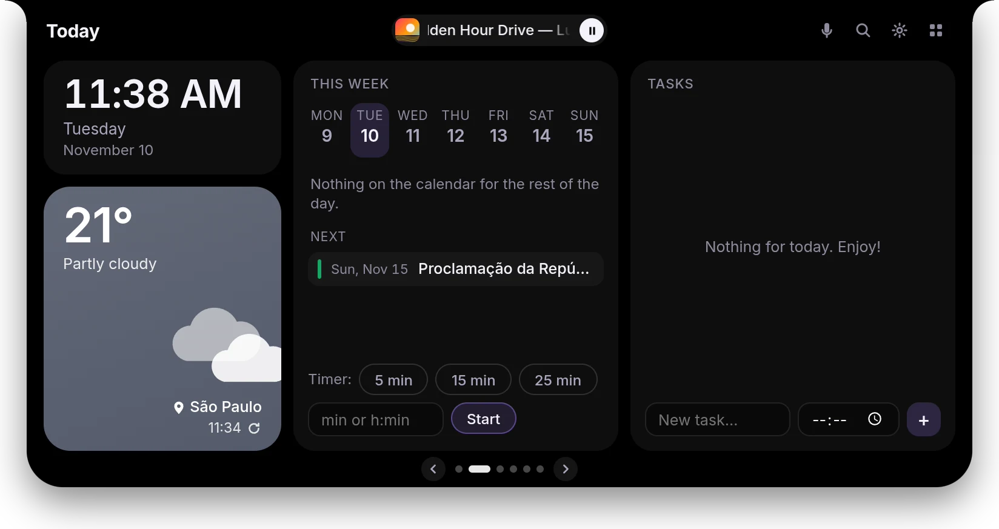
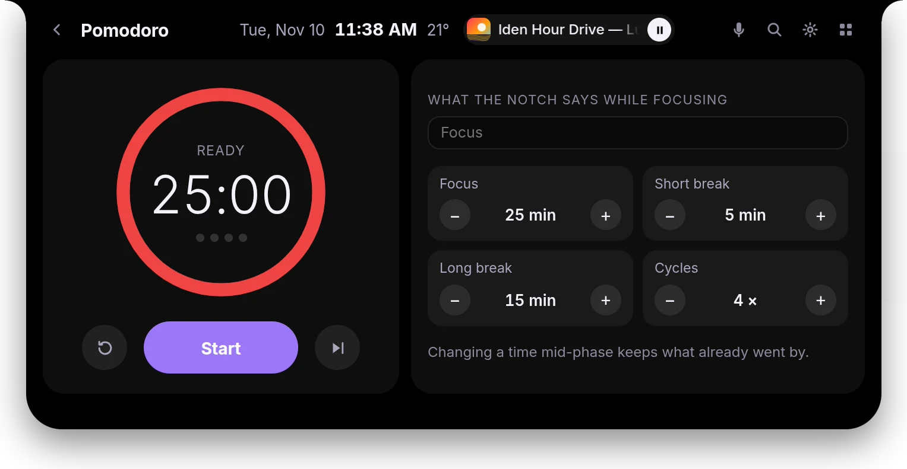
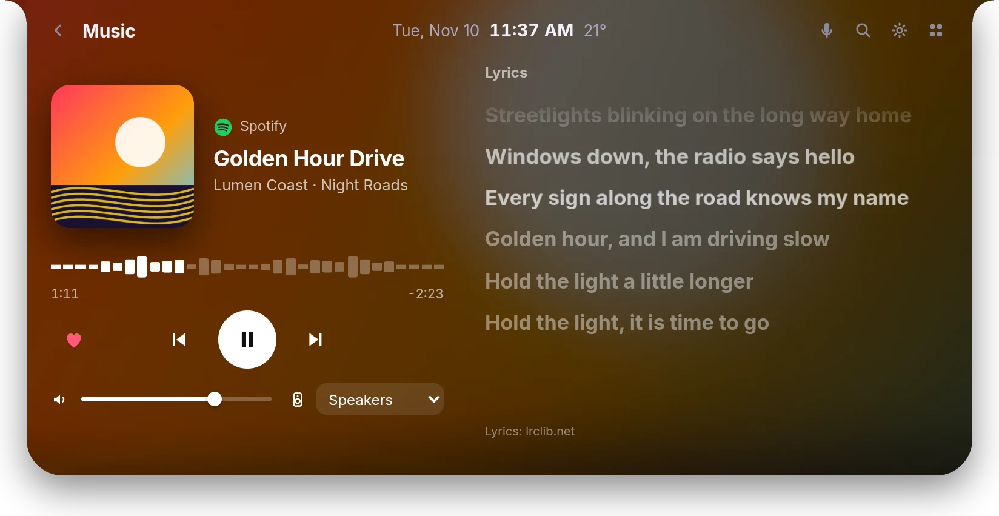
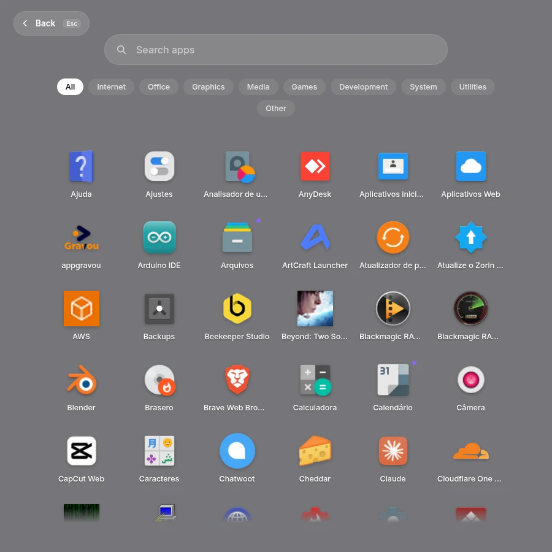
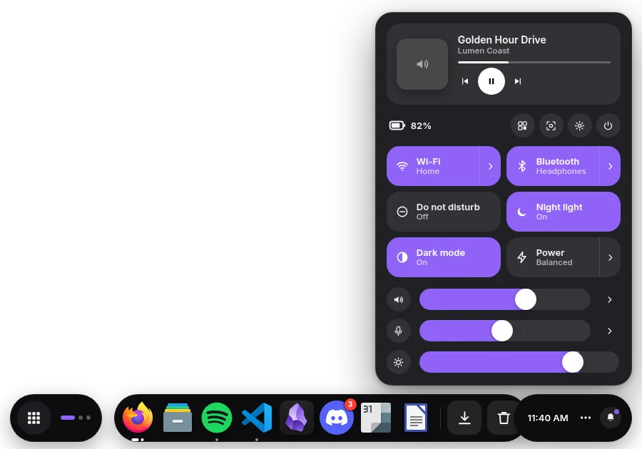
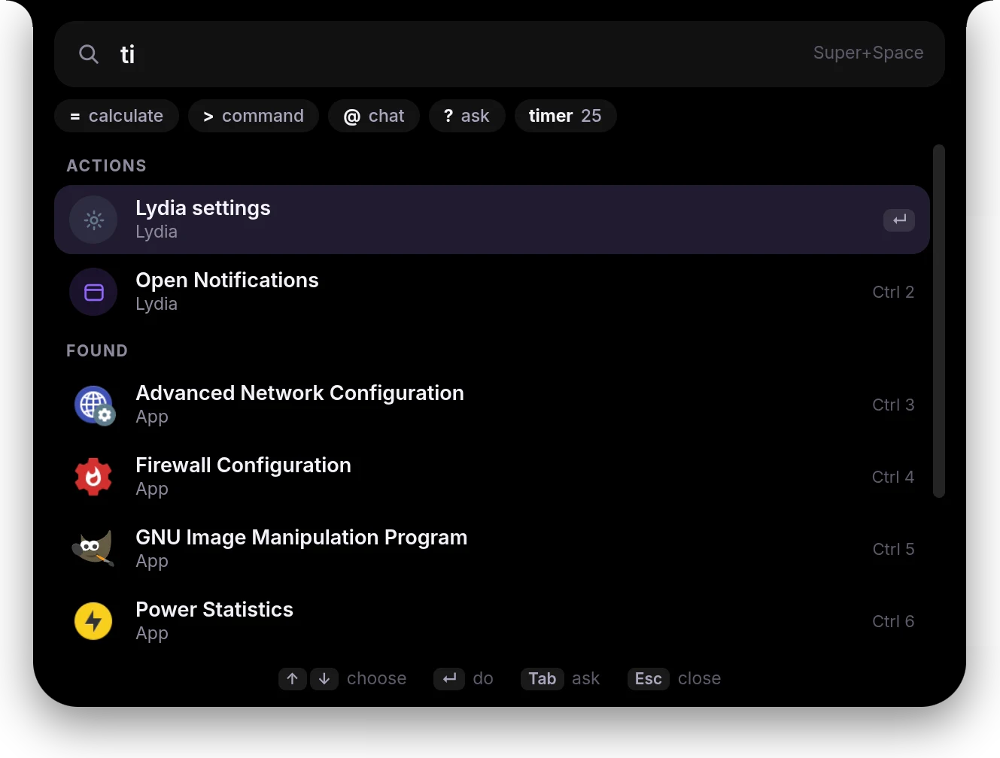

The top of your screen, finally useful.
Lydia is a dynamic island for Linux. Hover the top edge or press Super, and your controls, your day, your music and your apps open right there. Leave, and she closes.
Pages that open where you look.
Pin the pages you use and they become slides; the rest wait in All. Each one can show only on a free desktop or only over windows, and hide the parts you never touch.


Music gets a page of its own.
What plays sits beside the clock on every page. Open it for the cover, lyrics that follow the song line by line, what comes next, a like, and that app's own volume.

And a dock that belongs with her.
Islands, edge or glass. An app drawer that fills the screen, quick settings with a page for each thing, notifications and a calendar. Bring the dock up over a window and a panel can rise with it.



Everything, one shortcut away.
Press Super F and type: an app, a setting, a sum, a 25-minute timer, or a question for the assistant.
Or press Super Alt Space and just say it. Your voice becomes text on your own computer.
And when you log in, she says hello.
The screen waits in its colour, she writes hello by hand, and the word shrinks into the notch. In white, mint or a rainbow, with a chord of her own.
Yours, by default.
- Nothing you say or type is recorded.
- Your voice becomes text on your computer.
- The internet only for what you use: the chat, the weather, lyrics.
- No account to create.
Install her in a minute.
Made for GNOME 42 to 51; the island and most pages also run on Cinnamon, MATE, XFCE and KDE. She checks once a day for a new version and tells you.
-
.debUbuntu, Debian, Mint, Pop!_OS, Zorin, elementaryrecommended
-
.rpmFedora, openSUSE
-
AppImageAny other distro
x64 above. ARM64 packages, older versions and checksums are on GitHub.